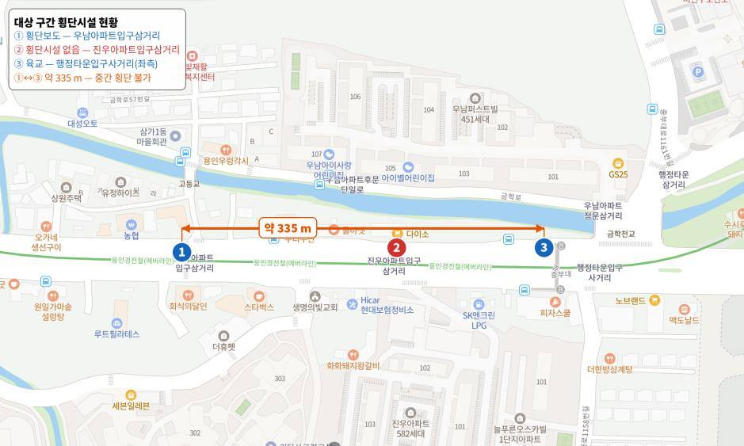
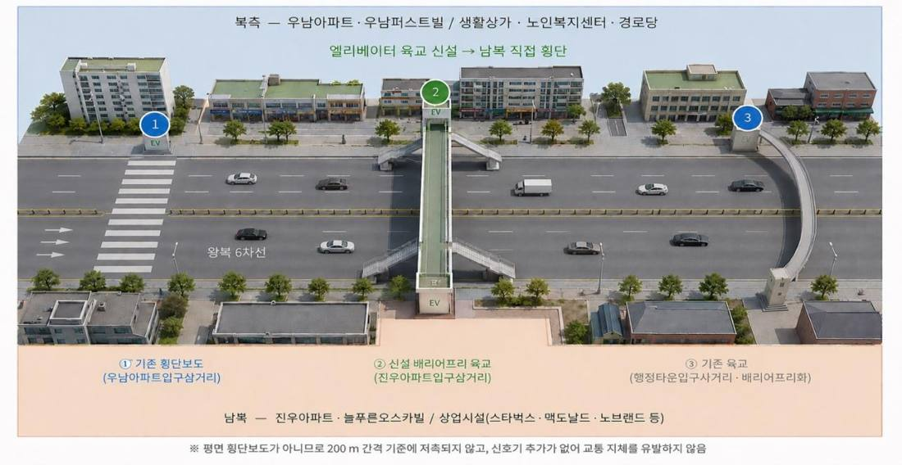

간선도로 횡단시설 간격과 상권 접근성
경기 용인시 처인구 삼가동 · 행정타운입구사거리 ~ 우남아파트입구삼거리 약 335m


335m 동안 건널 곳이 없는 왕복 6차선 도로가 양쪽 생활권과 상권을 끊고 있는 문제를 다뤘습니다. 법령상 평면 횡단보도는 설치할 수 없음을 확인하고, 엘리베이터를 갖춘 육교를 대안으로 제시했습니다.
육교와 횡단보도 사이 335m에 건널 곳이 없어, 중간 삼거리의 보행자는 길 건너 상가까지 최대 약 167m를 돌아가야 합니다. 도로 양쪽 주거지와 상권이 서로의 배후 수요가 되지 못하고, 무단횡단 위험도 커집니다. 인근에 노인복지시설이 있어 교통약자 비중이 높은 구간입니다.
- 토지이용, 상권, 횡단시설 현황을 지도에 정리
- 도로교통법 제10조와 시행규칙 제11조의 횡단보도 간격 기준(간선도로 200m)으로 평면 횡단보도 신설 가능성 검토
- 육교, 지하보도, 기존 시설 개선을 법적 적합성, 신호 영향, 교통약자 접근성, 사업비 기준으로 비교
335m 구간에서는 양쪽 시설과 200m씩 떨어진 지점이 존재하지 않아, 평면 횡단보도는 제도상 설치할 수 없음을 확인했습니다. 신호 체계를 바꾸지 않고 간격 기준에도 걸리지 않는 엘리베이터형 배리어프리 육교를 1순위로 제안하고, 단기에는 기존 시설 개선, 중장기에는 신설로 나누는 추진 순서와 노인보호구역 지정 검토, 간격 기준 개선을 정책 과제로 정리했습니다.
개인 과제로 대상지 선정부터 현황 분석, 법령 검토, 대안 비교, 보고서 작성까지 전 과정을 수행했습니다.